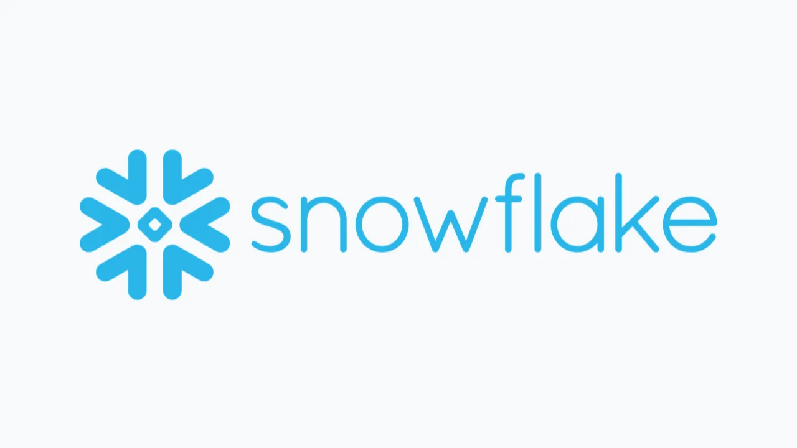

스노우플레이크 SNOW를 볼 때 가장 쉬운 설명은 “AI 데이터 클라우드 수혜주”입니다. 하지만 주주에게 필요한 질문은 조금 더 좁아야 합니다. AI라는 말이 붙은 기능이 늘었다는 사실보다, 고객이 실제로 더 많은 컴퓨트와 데이터 서비스를 쓰고 있는지, 그 사용량이 제품 매출과 현금흐름으로 남는지가 더 중요합니다. 스노우플레이크는 일반 구독 소프트웨어처럼 계약 기간에 맞춰 매출이 고르게 쌓이는 회사가 아닙니다. 고객이 플랫폼에서 컴퓨트, 스토리지, 데이터 전송을 얼마나 쓰는지가 매출을 움직입니다.
2026년 4월 30일로 끝난 2027회계연도 1분기는 이 질문에 꽤 강한 답을 줬습니다. 제품 매출은 13억3,430만달러로 전년 대비 34% 늘었고, 총매출은 13억9천만달러로 33% 증가했습니다. 남은 수행의무는 92억1천만달러로 38% 증가했고, 순매출유지율은 126%였습니다. 고객이 계약만 잡아 놓은 것이 아니라 기존 고객 안에서 사용량이 다시 커지고 있다는 신호입니다. 그래서 이번 글의 초점은 “주가가 얼마나 올랐나”가 아니라 “이 성장의 질이 얼마나 단단한가”입니다.
스노우플레이크는 이제 데이터 웨어하우스 회사라는 설명만으로는 부족합니다. 회사는 코텍스 AI, 스노우플레이크 인텔리전스, 코텍스 코드, 오픈AI·앤스로픽·구글 클라우드와의 모델 협력, AWS와의 대형 협력, Natoma 인수까지 한꺼번에 밀어붙이고 있습니다. 겉으로 보면 모두 AI 호재처럼 보입니다. 그러나 투자자는 각 이벤트를 한 문장으로 묶기보다, 매출, 총마진, 고객 확장, 클라우드 인프라 비용이라는 네 개의 숫자로 다시 분해해야 합니다.
사용량이 매출을 만든다는 점이 핵심

스노우플레이크의 매출 구조에서 가장 중요한 단어는 “사용량”입니다. SEC 10-Q에서 회사는 제품 매출이 고객의 컴퓨트, 스토리지, 데이터 전송 리소스 소비에서 나온다고 설명합니다. 고객은 계약한 용량보다 더 많이 쓸 수 있고, 사용하지 않은 용량을 갱신 때 이월하는 경우도 있습니다. 이 구조는 매력적입니다. 고객의 데이터가 늘고 분석·AI 워크로드가 커지면 매출이 자연스럽게 따라 올라갈 수 있기 때문입니다.
동시에 이 구조는 불편합니다. 고객이 예산을 조정하거나 쿼리 효율화를 하거나 워크로드를 다른 플랫폼으로 옮기면 매출 속도가 바로 둔해질 수 있습니다. 그래서 SNOW는 “계약액이 얼마인가”보다 “고객이 실제로 쓰고 있나”가 중요합니다. 이번 분기의 제품 매출 34% 성장은 단순한 계약 발표보다 더 의미가 큽니다. 고객 사용량이 실제 매출로 찍혔기 때문입니다.
RPO 92억1천만달러도 그냥 백로그처럼 보면 안 됩니다. RPO는 앞으로 매출로 전환될 가능성이 있는 계약 의무를 보여주지만, 스노우플레이크의 소비형 모델에서는 전환 속도가 고객 사용량에 크게 좌우됩니다. RPO가 38% 늘었다는 것은 기업 고객이 더 큰 용량을 예약하고 있다는 신호입니다. 다만 그 숫자가 주주에게 좋은 매출이 되려면 고객이 데이터를 더 많이 넣고, 더 자주 분석하고, AI 워크로드를 실제 업무에 붙여야 합니다.
순매출유지율 126%는 이 회사의 핵심 체온계입니다. 기존 고객 집단에서 다음 해 제품 매출이 얼마나 더 커졌는지 보는 지표이기 때문입니다. 126%라는 숫자는 고객 이탈보다 확장이 강하다는 뜻입니다. 하지만 장기적으로는 이 지표가 낮아질 수 있다고 회사도 설명합니다. 큰 고객이 많아질수록 초기 확장률은 자연스럽게 둔해질 수 있습니다. 그래서 다음 분기에도 NRR이 얼마나 버티는지, 100만달러 이상 고객 수가 얼마나 늘어나는지를 같이 봐야 합니다.
AI 계정 수보다 대형 고객 소비가 중요
관련 영상
스노우플레이크와 AWS 60억달러 협력 의미를 설명하는 한국어 롱폼 영상
스노우플레이크는 1분기 평균 기준 1만3,600개가 넘는 계정이 AI 기능을 쓰고 있다고 밝혔습니다. 스노우플레이크 인텔리전스 사용 계정은 전 분기 대비 두 배 이상 늘었고, 코텍스 코드는 7,100개 이상 계정에서 사용되고 있다고 설명했습니다. 숫자만 보면 AI 전환은 이미 시작된 것처럼 보입니다. 다만 여기서 바로 매출을 단정하면 위험합니다. 무료 체험, 작은 사용량, 실험 계정이 섞일 수 있기 때문입니다.
주주가 봐야 할 것은 AI 기능을 켠 계정 수가 아니라 대형 고객의 지갑이 커지는 속도입니다. 최근 12개월 제품 매출이 100만달러를 넘은 고객은 779개였고, 전년 대비 29% 증가했습니다. 더 중요한 점은 1분기에만 46개 고객이 이 기준을 새로 넘었다는 것입니다. AI가 실제 예산으로 들어가고 있다면, 가장 먼저 이 대형 고객 지표와 RPO, NRR에 나타나야 합니다.
AI 제품이 스노우플레이크에 주는 가치는 두 갈래입니다. 하나는 기존 데이터 플랫폼 사용량을 늘리는 효과입니다. 기업이 AI 답변을 신뢰하려면 정리된 데이터, 권한 관리, 감사 로그, 보안 정책이 필요합니다. 이때 스노우플레이크는 데이터가 이미 있는 위치에서 AI를 실행하게 만들 수 있습니다. 다른 하나는 새로운 제품 표면입니다. 스노우플레이크 인텔리전스와 코텍스 코드는 사용자가 SQL을 직접 쓰지 않아도 데이터에 질문하고 코드를 만들게 하는 방향입니다.
하지만 이 방향은 경쟁이 약하다는 뜻이 아닙니다. 마이크로소프트는 패브릭과 코파일럿을 밀고 있고, 아마존과 구글은 자체 데이터·AI 서비스를 갖고 있습니다. 팔란티어는 운영 의사결정과 AI 워크플로를 전면에 세웁니다. 데이터도그는 관측성과 보안 데이터에서 고객 접점을 넓힙니다. 스노우플레이크가 이 경쟁에서 살아남으려면 “AI 기능이 있다”가 아니라 “고객이 민감한 데이터를 안전하게 두고 실제 업무를 더 많이 처리한다”를 숫자로 보여줘야 합니다.
AWS 60억달러 약정은 수요 확신이자 원가 시험
이번 발표에서 가장 크게 보인 이벤트는 AWS와의 다년 전략 협력 확대입니다. 스노우플레이크는 5년간 AWS Graviton 컴퓨트와 AI 지출에 60억달러를 약정했습니다. 회사 입장에서는 고객 수요에 대한 자신감입니다. 다수 고객이 AWS 위에서 스노우플레이크를 쓰고 있고, 기업 AI 워크로드가 빠르게 늘어난다고 판단하지 않았다면 이런 규모의 약정을 잡기 어렵습니다.
그러나 주주 입장에서는 이 약정이 양날입니다. 수요가 예상대로 커지면 대량 구매와 Graviton 전환은 원가 효율을 높일 수 있습니다. 반대로 사용량이 기대보다 약하거나 AI 추론 비용이 제품 매출보다 빠르게 늘면, 클라우드 인프라 약정은 마진을 누르는 고정 부담처럼 보일 수 있습니다. SEC 10-Q는 제품 매출원가에 퍼블릭 클라우드 인프라 비용, AI 추론과 GPU 관련 비용이 포함된다고 설명합니다. 그래서 AWS 약정은 호재이면서 동시에 제품 매출총이익률을 시험하는 항목입니다.
Q1 FY2027의 비GAAP 제품 매출총이익률은 75.1%였습니다. 이 수준은 매우 중요합니다. AI 기능 사용이 늘어도 총마진이 유지된다면, 스노우플레이크는 AI 수요를 이익으로 바꾸는 플랫폼이라는 평가를 받을 수 있습니다. 반대로 AI 사용량은 늘었는데 GPU와 클라우드 비용 때문에 제품 총마진이 꺾이면, 시장은 AI 매출의 질을 의심하게 됩니다. 지금부터는 제품 매출 성장률 하나만으로 부족합니다.
AWS와의 관계도 단순 협력만은 아닙니다. 스노우플레이크는 AWS 위에서 성장했지만, AWS는 레드시프트와 자체 AI·데이터 서비스를 보유한 경쟁자이기도 합니다. SEC 10-Q도 AWS, Azure, GCP 같은 대형 클라우드 사업자가 경쟁사이며 동시에 스노우플레이크 플랫폼이 올라가는 기반이라고 설명합니다. 이 모순이 스노우플레이크의 사업 구조입니다. 협력으로 고객 접근성을 넓히되, 클라우드 사업자에게 가격 결정권을 빼앗기지 않아야 합니다.
다음 분기에는 성장보다 품질을 봐야 합니다
스노우플레이크는 FY2027 제품 매출 가이던스를 58억4천만달러로 올렸습니다. 전년 대비 31% 성장입니다. 비GAAP 영업이익률 가이던스도 13.5%로 상향됐고, 조정 잉여현금흐름률은 23.0%로 제시됐습니다. 강한 숫자입니다. 하지만 좋은 성장주일수록 다음 확인 기준은 더 까다로워져야 합니다. 이미 시장이 재가속을 가격에 반영했다면, 다음 분기에는 성장률보다 성장의 품질이 중요해집니다.
첫 번째 확인 지표는 제품 매출과 RPO의 동행입니다. 제품 매출이 늘고 RPO도 같이 늘면 고객이 지금 쓰는 양과 앞으로 쓸 의향이 동시에 좋아진다는 뜻입니다. 둘 중 하나만 좋아지면 해석이 어려워집니다. 제품 매출은 좋은데 RPO가 약하면 단기 사용량에 기대는 것처럼 보일 수 있고, RPO는 좋은데 제품 매출 전환이 느리면 계약이 실제 소비로 바뀌는 속도를 의심하게 됩니다.
두 번째는 대형 고객의 깊이입니다. 100만달러 초과 고객이 늘어나는 것은 좋지만, 그 안에서 1천만달러 이상 고객이 얼마나 늘고 있는지도 중요합니다. 데이터 플랫폼은 한 번 핵심 업무에 들어가면 예산이 커질 수 있습니다. 반대로 주변 분석 업무에 머물면 성장률이 둔화되기 쉽습니다. 스노우플레이크가 팔란티어처럼 운영 의사결정 가까이 들어가거나, 데이터도그처럼 실시간 운영 데이터를 붙잡으려면 고객 내부에서 쓰임새가 깊어져야 합니다.
세 번째는 주주 몫입니다. 회사는 2026년 4월 30일 종료 분기에 170만주를 3억달러에 매입했고, 잔여 자사주 매입 한도는 8억270만달러였습니다. 동시에 2027년과 2029년 만기 전환사채 총 23억달러도 있습니다. 자사주 매입은 주식보상과 희석 부담을 일부 완화할 수 있지만, 진짜 방어력은 잉여현금흐름에서 나옵니다. 조정 잉여현금흐름률이 20% 안팎에서 유지되면 투자자는 성장과 주주환원이 함께 가능하다고 볼 수 있습니다.
결론적으로 스노우플레이크는 다시 흥미로운 회사가 됐습니다. Q1 FY2027은 제품 매출, RPO, NRR, 대형 고객, AI 사용 지표가 한 방향으로 움직인 분기였습니다. 다만 주주가 여기서 멈추면 안 됩니다. 다음 확인 질문은 “AI라는 단어가 더 많이 나오는가”가 아닙니다. “AI가 고객의 실제 소비량을 늘리고, 그 소비가 75% 안팎의 제품 총마진과 20%대 잉여현금흐름으로 남는가”입니다. 이 답이 숫자로 이어질 때 SNOW는 단순한 AI 테마주가 아니라 기업 데이터 소비를 장기적으로 붙잡는 플랫폼으로 평가받을 수 있습니다.